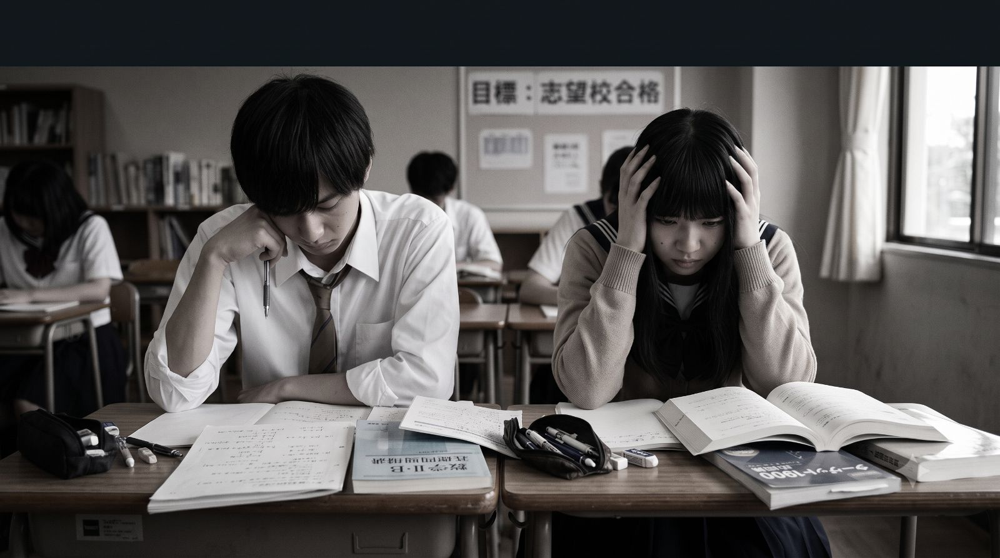
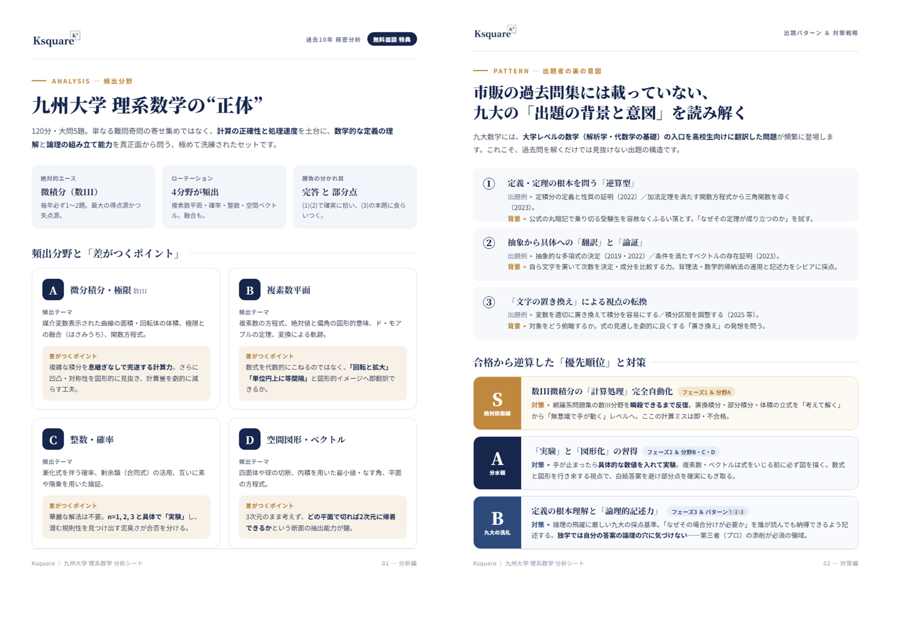
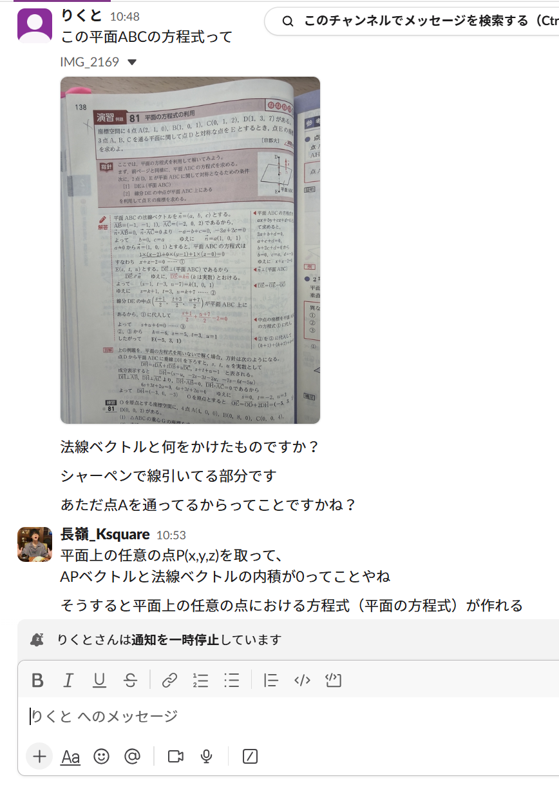
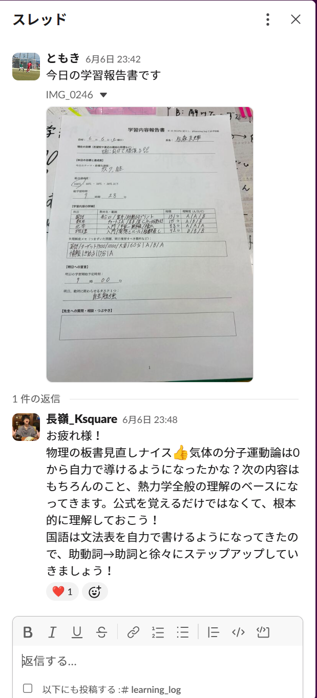

01
計画の解像度
✕従来の学習法参考書を終わらせる計画
✓Ksquareどの分野をいつまでに何点取るかまで
“勉強計画を一緒に立てるから自信を持って進められる” ―受講生の声
あなただけの志望校の過去問を10年分析。
この夏、逆転合格への最短ルートを設計します。
開校以来の実績
退塾者0名継続中
継続率100%
※自己都合による退塾者0名
現実を知っていますか？
模試でD・E判定だった受験生の多くは、
努力だけでは志望校合格に届きません。
※河合塾 全統模試における合格可能性評価より
しかし──
正しい戦略があれば、この可能性は変えられます。

逆転合格に必要なのは
— D・E判定からの逆転を。あなたの志望校を知り尽くした講師が完全マンツーマンで指導します。 —
志望校・学部の過去問を10年単位で分析。頻出分野の列挙にとどまらず出題パターンまで研究し、合格から逆算した最短ルートを設計します。
下のサンプルは九州大学 理系数学の分析シートです。

Ksquareは「合格から逆算した戦略」を設計します。
✕従来の学習法参考書を終わらせる計画
✓Ksquareどの分野をいつまでに何点取るかまで
“勉強計画を一緒に立てるから自信を持って進められる” ―受講生の声
✕従来の学習法基礎だけ反復
✓Ksquare基礎→応用→過去問が一本につながる
“基礎から埋めながら、先を見据えて進められる” ―受講生の声
✕従来の学習法何のための勉強か分からない
✓Ksquare毎日の勉強が志望校合格につながる実感
“毎日質問・相談できるから、目標を見失わず頑張れる” ―受講生の声
✕従来の学習法全範囲を均等に勉強
✓Ksquare過去問分析から出る単元だけ重点対策
“出る単元が分かるから、無駄なく効率的に勉強できる” ―受講生の声
このようにKsquareでは逆転合格を実現するための、
あなただけの「合格までの最短ルート」を提供します。
一般的な夏期講習の約1/2〜1/5の価格
※塾シル掲載情報を参考
価格を下げるために指導の質を落としているわけではありません。無駄なコストを削減し、その分を受講生へ還元しています。
校舎の家賃や設備費などの固定費を抑え、その分を授業品質やサポートへ還元しています。
「塾に通わせたいけれど費用が高い。」そんなご家庭を少しでも減らしたい。だから必要な指導だけを、続けやすい価格で提供しています。
共通テスト対策講座
苦手科目・分野にフォーカスし、基礎から共通テスト基礎・応用レベルまで引き上げ、共通テストの出題形式を攻略します。
| 授業回数 | 受講料 |
|---|---|
| 60分 × 3回 | 15,000円 |
| 60分 × 6回 | 24,000円 |
| 60分 × 8回 | 28,000円 |
| 60分 × 9回 | 30,600円 |
| 60分 × 16回 | 43,200円 |
※価格はすべて税込
まずは無料相談してみる志望校特化対策講座
苦手科目・分野と志望校過去問の対策優先分野を照合し、基礎から二次試験基礎・応用レベルまで引き上げ、志望校の過去問を攻略します。
| 授業回数 | 受講料 |
|---|---|
| 60分 × 3回 | 18,000円 |
| 60分 × 6回 | 27,000円 |
| 60分 × 8回 | 32,000円 |
| 60分 × 9回 | 35,000円 |
| 60分 × 16回 | 50,000円 |
※価格はすべて税込
まずは無料相談してみる授業がある日も、ない日も。あなたの受験に、毎日伴走します。
チャット・Zoomでいつでも質問可能。
疑問をその日のうちに解決します。

学習の進捗を共有し、ライバルと切磋琢磨できる環境。
毎日担当講師からアドバイスが届きます。
※投稿は強制ではありません

さらに今だけ
実際にKsquareで学んでいる受講生・保護者のリアルな声
※個人の感想です。
最初は基礎から何を、どの順番で進めればいいか分かりませんでした。Ksquareに入って先生と一緒に勉強計画を立てるようになり、基礎から一つずつ埋めながら先の志望校対策まで見据えられるように。今では値段以上の安心を感じながら勉強に取り組めています。
最初は問題を質問できる相手がおらず、つまずいたまま止まってしまうことがよくありました。Ksquareに入って一日一日の勉強計画が明確になり、毎日質問できる環境も手に入りました。今では分かるまで親身に教えてもらえるので、迷わず前に進めています。
最初は高い教材を勧められるのではと不安でしたが、自分が持っている参考書を活かして進めてくれるので安心しました。Ksquareに入って完全個別指導で、分からないところは先に進まず丁寧に教えてもらえる点が他の予備校との一番の違いだと感じています。今では入試から逆算した志望校対策を、圧倒的なコスパで受けられていると実感しています。
最初は進捗や方針を一人で抱え込み、これで合っているのか不安でした。Ksquareに入って毎日質問・相談ができるようになり、先生と二人で考えられるように。今では自分に合った効率のよい勉強ができ、逆転合格に向けて着実に進んでいる実感があります。
志望校分析、個別指導、毎日の質問対応を組み合わせ、学習の迷いと遅れを減らし、成績アップの確率を極限まで引き上げます。
Zoomを使用できるデバイスをご準備ください。
可能です。※1コマ単位での追加料金が発生いたします。
大歓迎です！お気軽にどうぞ。
クレジットカード、銀行振込
正しい戦略と、いつでも頼れる環境、そして無理のない価格。この3つが揃えば、この夏からでも逆転は可能です。
完全マンツーマン／入会金0円／無料体験1回